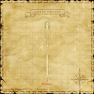

Description
Hall of the Gods is a city area in Li'Telor.
Map

Story walkthroughs in this area
| Story | Mission / quest |
|---|---|
| RoZ 10 | The Temple of Desolation |
| RoZ 11 | The Hall of the Gods |
| RoZ 12 | The Mithra and the Crystal |
| RoZ 13 | The Gate of the Gods |
| RoZ 16 | The Celestial Nexus |
| ACP 7 | Those Who Lurk in Shadows (III) |
| ACP 8 | Remember Me in Your Dreams |
References
External references describe their own server or retail rules. Documented Zenith changes take precedence.
Map credits: Map 1 — HorizonXI Wiki. Original game maps © SQUARE ENIX; redrawn maps retain the credited authorship and license.

Additional level-75 reference


|
This long corridor is the final safe resting place before entering the vast etheral expanses of Tu'Lia. Statues adorn the interior of the hall, and a large statue of Promathia stands tall; one of the few grand monuments to the god of darkness that still stands in Vana'diel today. |
Connecting Areas
- Ro'Maeve at (H-13)
- Ru'Aun Gardens via teleport at (H-4)
Involved in Quests/Missions
| Mission | Country | Starter | Location |
| Zilart Mission 10:The Temple of Desolation | Zilart | --- | --- |
| Zilart Mission 13:The Gate of the Gods | Zilart | --- | --- |
Adapted from Eden Wiki: Hall of the Gods · Contributors and history · CC BY-SA 4.0. Revision 45905. Layout, links and optional background text adapted for Zenith.